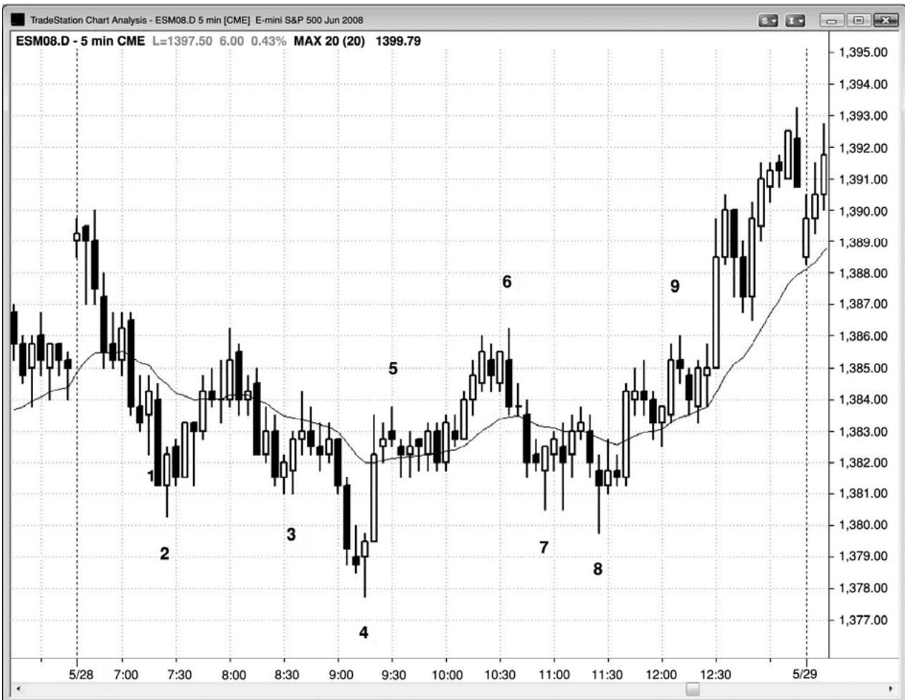
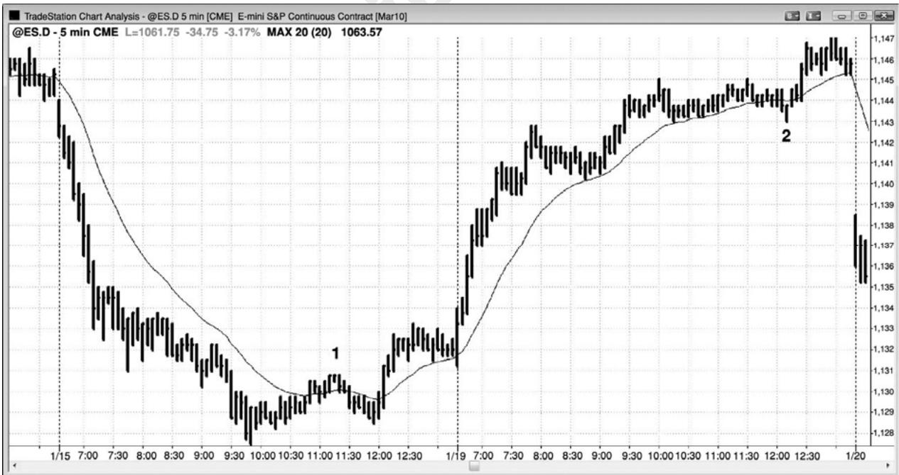

第14章 第一均线缺口棒¶
第 14 章 第一均线缺口棒
通常，20 缺口棒之后，市场会测试极点，下次对均线的测试甚至会更深。可能形成一棒，完全位于均线的另一侧。这是一条均线缺口棒，有时它还可能是一个 20 缺口棒回撤架构。缺口是一个广义术语，就是指图表上两个点之间存在空隙。举例说明，如果今天的开盘价高于昨天的收盘价，那么就形成一个上涨缺口。如果开盘价高于昨天的最高价，将在日线图上形成一个缺口。对这一术语的更宽泛地使用，带来了其他交易机会。举例说明，如果一棒高点低于均线，那么在那一棒和均线之间就形成一个缺口。在多头市场或横盘市场中，市场很可能会回补那个缺口。有时，一棒会向上超越前一棒高点，但是之后在一两棒内，回撤会再次下跌。如果市场再次向上超越前一棒高点，那么就形成一个第二均线缺口棒架构，或者是多头趋势中二次尝试回补一个均线缺口，极有可能形成可交易的反弹，离开这一架构。类似地，空头趋势或市场中，均线上方的缺口倾向于被回补。
如果出现一轮强趋势，而且这是该趋势中的第一条均线缺口棒，那么接下来市场通常会测试趋势极点。向缺口棒的这一波回撤一般会强到足以突破趋势线，在测试趋势极点后，市场通常会形成一波两条腿调整，甚至是重要趋势反转（在第三本书中讨论）。举例说明，如果有一轮强多头趋势，最后出现一条高点低于均线的棒线，然后下一棒向上超越那一棒高点，那么市场将努力测试多头极点，形成一个更高高点或更低高点。交易者们将会买进，做一笔波段交易，预期市场靠近或超越原来高点。如果均线下方的回撤进一步下跌，那么交易者们会逐步增加额外的多头头寸（这将在第 31 章关于逐步加仓和逐步减仓的部分讨论）。如果市场向上反弹测试原有高点，但接下来向下反转，那么通常会形成一波更长的调整，一般至少包含两条腿，常常引起趋势反转。
大部分图表上的大部分棒线都是均线缺口棒，因为大部分棒线都没有触及均线。但是，如果有一轮不强的趋势，而且有一位交易者做逆势交易（比如在均线上方一棒的低点下方 1个跳动处卖空），那么该交易者常常只是寻找向均线的刮头皮架构，他将在均线处获利了结。仅当当前价位与均线之间存在足够的空间，可以赚到一笔能够接受的利润，而且仅当那笔交易在当前价格行为的背景中是合理交易时，交易者才会选择那笔交易。因此，如果有一轮强趋势，那么每一均线缺口棒倾向于形成波段交易架构，如果没有强趋势，交易者选择均线缺口棒交易，那么她更有可能是在做刮头皮。

P134
图 14.1 中，棒 2 是第二次尝试回补横盘市场中均线下方的缺口。下行动能有点强，那或许意味着市场今天不是横盘整理，但由于昨天的强势收盘，均线基本保持水平。另外，有几棒与一两棒之前的棒线重叠，棒 2 也是双棒空头尖峰之后的第三次下推，双棒空头尖峰由当天第三棒和第四棒构成。多头使用止损单在棒 2 高点上方 1 个跳动处做多，准备在测试均线时获得一笔刮头皮的利润。
棒 3、4、和 8 也是二次尝试（首次尝试可能只是一条多头趋势棒），或者二次均线缺口棒入场。
棒 5 是一条均线缺口棒，但交易者们不会为了赚取到均线的刮头皮利润而在棒 5 做空，原因有二，一是因为没有足够的空间做刮头皮，二是因为它出现在一个很强的向上反转之后，在棒4更低低点向上反转之后，很可能形成一个更高低点和第二条上涨腿。
棒 6 和棒 9 都是第二均线缺口棒做空架构。一旦市场向上超越棒 9，那么就会形成一轮多头趋势，因为两次尝试下跌都失败了（棒 9 是一个第二均线缺口棒架构，也就是说它是第
二次尝试回补与均线之间的缺口）。
棒 7 是一个均线缺口棒架构，但是因为与均线之间的空隙太小，所以交易者们不大可能单单根据它是一条均线缺口棒而买进。
这张图表的更深入讨论
图 14.1 中，市场向上突破，但当天第一棒较小，所以不是失败的突破做空架构的可靠信号棒。第三棒很强，所以是一个更好的架构，预期形成开盘起空头趋势。
棒 6 是从开始于棒 4 之后上涨尖峰的尖峰和通道多头趋势开始的一个向下外包反转。
棒 8 是开始于棒 7 低点的那个小型扩张三角形的信号棒。也可把它看作一个楔形，因为它向下突破一个小型双重底，而且突破失败。棒 8 也是棒 4 底部之后的一个楔形多头旗形；三次下推是棒 5 后一棒、棒 7 和棒 8。最后，棒 8 是截止棒 5 的上涨尖峰之后的更高低点，那个上涨尖峰形成于棒4更低低点之后。
对棒 9 的向上突破是一个失败的楔形空头旗形，所以很可能形成一波向上的测量运动。三次上推是棒 8 前面倒数第二棒、棒 9 前面的波段高点和棒 9。

P135
第一均线缺口棒可能引起对趋势极点的测试。图14.2中，棒1和棒2都是强趋势中的第一均线缺口棒，接下来是对趋势极点的测试。棒 1 是空头趋势的第一棒，其低点位于均线上
方（该棒和均线之间存在一个缺口），接下来市场测试空头低点，形成一个更高低点。棒2之后形成一个新的趋势极点。